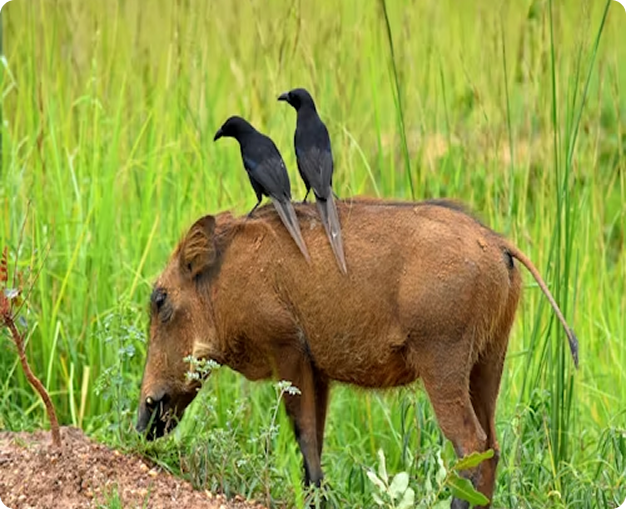

O comensalismo é uma relação ecológica entre indivíduos de espécies diferentes, onde um se
beneficia sem prejudicar ou beneficiar o outro. Um exemplo muito utilizado para o comensalismo
é a interação que as rêmoras têm com os tubarões. As rêmoras se prendem ao corpo dos tubarões
através de apreensórios e se alimentam dos restos alimentares do grande peixe, além de serem
transportadas sem gasto de energia.

As relações ecológicas acontecem a todo tempo, uma vez que é praticamente impossível um ser
vivo existir sem interagir em algum momento com outro. Existem diferentes tipos de relações
ecológicas, sendo algumas benéficas para todos os envolvidos, algumas benéficas para uns e
indiferente para outros, e outras que causam algum tipo de prejuízo para uma das partes.
Existem ainda as interações que envolvem apenas indivíduos da mesma espécie e aquelas que envolvem
indivíduos de espécies diferentes.
A protocooperação é uma relação do tipo interespecífica harmônica. Isso significa que essa
relação ecológica ocorre entre organismos de espécies diferentes (interespecífica), e os organismos
envolvidos são beneficiados com essa interação, não sendo nenhum prejudicado (harmônica).
A protocooperação é também denominada de mutualismo facultativo, isso porque os participantes
beneficiam-se, mas vivem normalmente de forma independente. No mutualismo obrigatório, muitas vezes
chamado apenas de mutualismo, verificamos uma relação obrigatória, na qual os indivíduos necessitam
daquela interação. Um exemplo desse último caso são os líquens, em que verificamos a interação entre
fungos e algas ou entre fungos e cianobactérias.